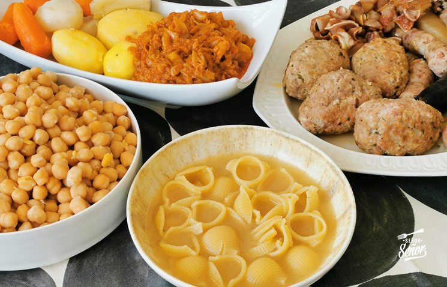

Escudella

Description
Escudella means "bowl," and in Catalonia it is the name of a big stew-soup, escudella i carn d'olla, usually made for Christmas
Ingridients
- 2 chicken feet, skinned or 1 chicken neck
- 1 chicken gizzard
- 1 lamb foot and ankle
- 1 1/3 pounds lamb shank
- 1 ham bone
- 2 pounds beef or pork marrow
- 5 quarts water
- 1 slice stale French bread
- 1 large egg, beaten
- 1 pound ground pork
- 1 pound botifarra
- 2 garlic cloves
- 1/4 finely chopped fresh parsley leaves
- Salt and freshly ground black pepper to taste
- 1 potato
- 1 carrot
- flour
- Fideos pasta
Steps
- Place the chicken feet or neck, chicken gizzard, lamb foot and ankle, lamb shank, ham bone or piece of ham, beef or pork marrow (soup) bones in a large stew pot. Cover with the water and bring to a boil. Boil for 2 hours, turning the meat occasionally. Replenish the water if necessary.
- Meanwhile, make the large meatball. Soak the slice of bread in water. Squeeze the water out and place in a medium-size mixing bowl with the beaten egg. Add the ground pork, butifarra, garlic, and parsley and season with salt and pepper. If the meatball doesn't hold together well add some of the bread crumbs. Form the meat into a single large ball and set aside in the refrigerator.
- After the meat bones have been boiling for 2 hours, turn the heat off and remove the bones. Remove the marrow from the soup bones and the meat from the lamb shank, cut it up, and discard all the bones. Transfer the marrow and meat to a stew pot or large casserole. Strain the broth and add it to the stew pot.
- Bring to a boil and add the pasta (or rice)potato, carrot, and Swiss chard. Season to taste with salt and boil for 10 minutes. Dredge the meatball evenly in flour, tapping off any excess, add it to the broth and boil until firm, about 20 to 25 minutes, replenishing the water if necessary. Serve immediately. The meatball can be divided by each diner.